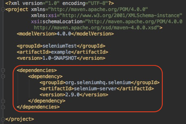
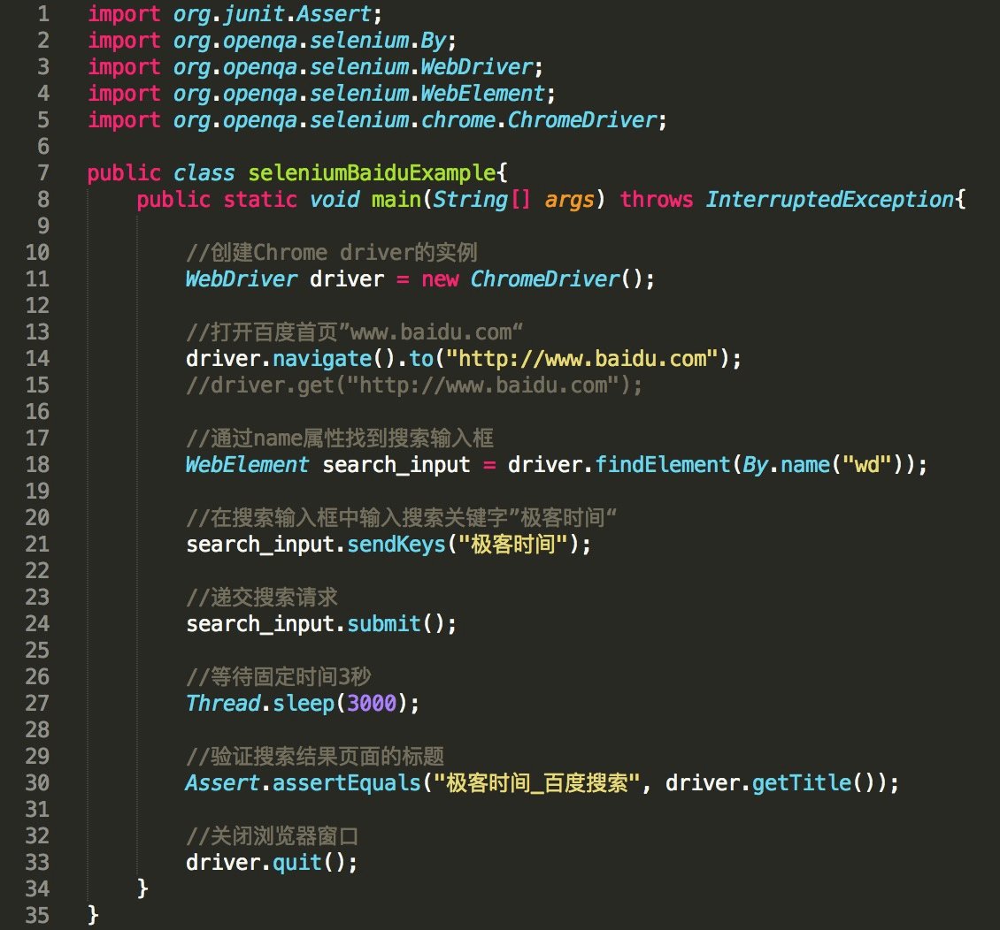
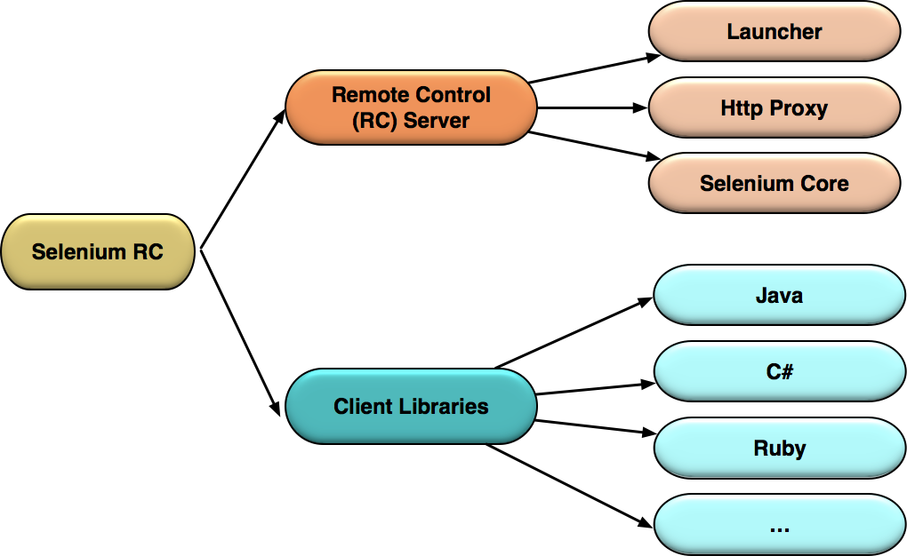
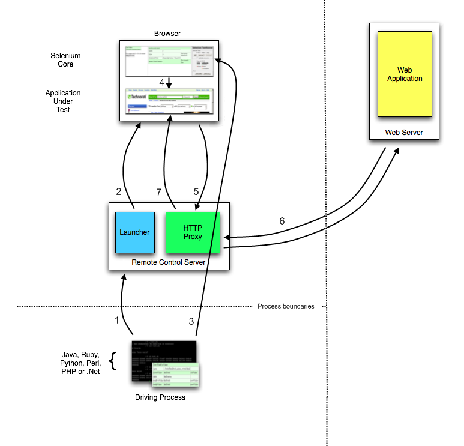
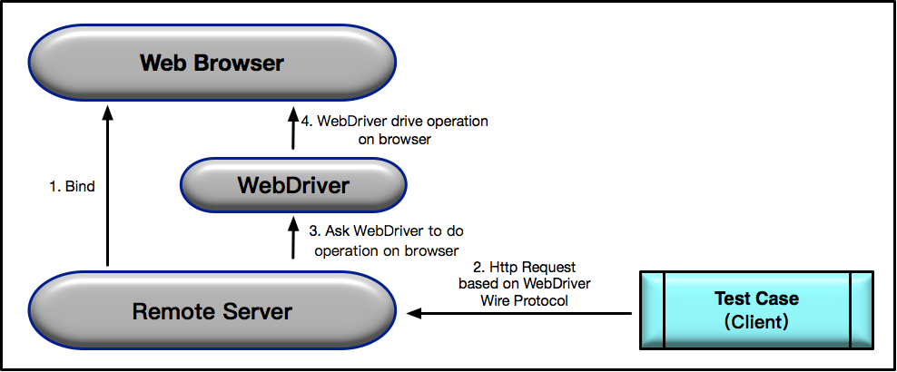

- 00 开篇词 从“小工”到“专家”，我的软件测试修炼之道.md.html
- 01 你真的懂测试吗？从“用户登录”测试谈起.md.html
- 02 如何设计一个“好的”测试用例？.md.html
- 03 什么是单元测试？如何做好单元测试？.md.html
- 04 为什么要做自动化测试？什么样的项目适合做自动化测试？.md.html
- 05 你知道软件开发各阶段都有哪些自动化测试技术吗？.md.html
- 06 你真的懂测试覆盖率吗？.md.html
- 07 如何高效填写软件缺陷报告？.md.html
- 08 以终为始，如何才能做好测试计划？.md.html
- 09 软件测试工程师的核心竞争力是什么？.md.html
- 10 软件测试工程师需要掌握的非测试知识有哪些？.md.html
- 11 互联网产品的测试策略应该如何设计？.md.html
- 12 从0到1：你的第一个GUI自动化测试.md.html
- 13 效率为王：脚本与数据的解耦 + Page Object模型.md.html
- 14 更接近业务的抽象：让自动化测试脚本更好地描述业务.md.html
- 15 过不了的坎：聊聊GUI自动化过程中的测试数据.md.html
- 16 脑洞大开：GUI测试还能这么玩（Page Code Gen + Data Gen + Headless）？.md.html
- 17 精益求精：聊聊提高GUI测试稳定性的关键技术.md.html
- 18 眼前一亮：带你玩转GUI自动化的测试报告.md.html
- 19 真实的战场：如何在大型项目中设计GUI自动化测试策略.md.html
- 20 与时俱进：浅谈移动应用测试方法与思路.md.html
- 21 移动测试神器：带你玩转Appium.md.html
- 22 从0到1：API测试怎么做？常用API测试工具简介.md.html
- 23 知其然知其所以然：聊聊API自动化测试框架的前世今生.md.html
- 24 紧跟时代步伐：微服务模式下API测试要怎么做？.md.html
- 25 不破不立：掌握代码级测试的基本理念与方法.md.html
- 26 深入浅出之静态测试方法.md.html
- 27 深入浅出之动态测试方法.md.html
- 28 带你一起解读不同视角的软件性能与性能指标.md.html
- 29 聊聊性能测试的基本方法与应用领域.md.html
- 30 工欲善其事必先利其器：后端性能测试工具原理与行业常用工具简介.md.html
- 31 工欲善其事必先利其器：前端性能测试工具原理与行业常用工具简介.md.html
- 32 无实例无真相：基于LoadRunner实现企业级服务器端性能测试的实践（上）.md.html
- 33 无实例无真相：基于LoadRunner实现企业级服务器端性能测试的实践（下）.md.html
- 34 站在巨人的肩膀：企业级实际性能测试案例与经验分享.md.html
- 35 如何准备测试数据？.md.html
- 36 浅谈测试数据的痛点.md.html
- 37 测试数据的“银弹”- 统一测试数据平台（上）.md.html
- 38 测试数据的“银弹”- 统一测试数据平台（下）.md.html
- 39 从小作坊到工厂：什么是Selenium Grid？如何搭建Selenium Grid？.md.html
- 40 从小工到专家：聊聊测试执行环境的架构设计（上）.md.html
- 41 从小工到专家：聊聊测试执行环境的架构设计（下）.md.html
- 42 实战：大型全球化电商的测试基础架构设计.md.html
- 43 发挥人的潜能：探索式测试.md.html
- 44 测试先行：测试驱动开发(TDD).md.html
- 45 打蛇打七寸：精准测试.md.html
- 46 安全第一：渗透测试.md.html
- 47 用机器设计测试用例：基于模型的测试.md.html
- 48 优秀的测试工程师为什么要懂大型网站的架构设计？.md.html
- 49 深入浅出网站高性能架构设计.md.html
- 50 深入浅出网站高可用架构设计.md.html
- 51 深入浅出网站伸缩性架构设计.md.html
- 52 深入浅出网站可扩展性架构设计.md.html
- 测试专栏特别放送 浅谈全链路压测.md.html
- 测试专栏特别放送 答疑解惑第一期.md.html
- 测试专栏特别放送 答疑解惑第七期.md.html
- 测试专栏特别放送 答疑解惑第三期.md.html
- 测试专栏特别放送 答疑解惑第二期.md.html
- 测试专栏特别放送 答疑解惑第五期.md.html
- 测试专栏特别放送 答疑解惑第六期.md.html
- 测试专栏特别放送 答疑解惑第四期.md.html
- 结束语 不是结束，而是开始.md.html
- 捐赠
12 从0到1：你的第一个GUI自动化测试
在前面的测试基础知识系列文章中，我分享了测试相关的基础知识，从测试用例的设计，到测试覆盖率，再到测试计划的制定，这些都是我认为测试人要掌握的一些基本知识。
那么，接下来我将要带你走入GUI自动化测试的世界，和你一起聊聊GUI自动化测试的技术、原理和行业最佳实践。
作为该系列的第一篇文章，我直接以一个最简单的GUI自动化用例的开发为例，带你从0开始构建一个Selenium的GUI自动化测试用例。
先让你对GUI自动化测试有一个感性认识，然后以此为基础，我再来解释Selenium自动化测试实现的核心原理与机制，希望可以帮你由点到面建立起GUI测试的基础知识体系。
构建一个Selenium自动化测试用例示例
测试需求非常简单：访问百度主页，搜索某个关键词，并验证搜索结果页面的标题是“被搜索的关键词”+“_百度搜索”。
如果搜索的关键词是“极客时间”，那么搜索结果页面的标题就应该是“极客时间_百度搜索”。
明白了测试需求后，我强烈建议你先用手工方式执行一遍测试，具体步骤是：
打开Chrome浏览器，输入百度的网址“www.baidu.com”；
在搜索输入框中输入关键词“极客时间”并按下回车键；
验证搜索结果页面的标题是否是“极客时间_百度搜索”。
明确了GUI测试的具体步骤后，我们就可以用Java代码，基于Selenium实现这个测试用例了。
这里，我要用到Chrome浏览器，所以需要先下载Chrome Driver并将其放入环境变量。接下来，你可以用自己熟悉的方式建立一个空的Maven项目，然后在POM文件中加入Selenium 2.0的依赖，如图1所示。

图1 在POM文件中加入Selenium 2.0的依赖
接着用Java创建一个main方法，并把如图2所示的代码复制到你的main方法中。

图2 基于Selenium的自动化测试用例的样本代码
现在，你可以尝试运行这个main方法，看看会执行哪些操作。
这段代码会自动在你的电脑上打开Chrome浏览器；
在URL栏自动输入“www.baidu.com”；
百度主页打开后，在输入框自动输入“极客时间”并执行搜索；
返回搜索结果页面；
Chrome浏览器自动退出。
以上这些步骤都是由自动化测试代码自动完成的。
如果你已经接触过GUI自动化测试，你可能习以为常了，感觉没什么神奇的。但如果你是第一次接触GUI自动化测试，是不是觉得还蛮有意思的。
现在，我来快速解读一下这些代码，你可以看看这些自动化步骤是怎么实现的，更具体的原理和内部机制我会在后面文章中详细展开。
- 第11行，WebDriver driver = new ChromeDriver()，先创建一个Chrome Driver的实例，也就是打开了Chrome浏览器，但实际上没这么简单，后台还做了些额外的Web Service绑定工作，具体后面会解释；
- 第14行，driver.navigate().to(s: “http://www.baidu.com”)用刚才已经打开的Chrome浏览器访问百度主页；
- 第18行，WebElement search_input = driver.findElement(By.name(“wd”))，使用driver的findElement方法，并通过name属性定位到了搜索输入框，并将该搜索输入框命名为search_input；
- 第21行，search_input.sendKeys(…charSequences:“极客时间”)，通过WebElement的sendKeys方法向搜索输入框search_input输入了字符串“极客时间”；
- 第24行，search_input.submit()，递交了搜索请求；
- 第27行，Thread.sleep(millis:3000)，强行等待了固定的3秒时间；
- 第30行，Assert.assertEquals(expected:“极客时间_百度搜索”,driver.getTitle())，通过junit的assertEquals比较了浏览器的标题与预计结果，其中页面标题通过driver的getTitle方法得到，如果标题与预计结果一致，测试通过，否则测试失败；
- 第33行，driver.quit()，显式关闭了Chrome浏览器。
现在，你对main方法中的代码，已经比较清楚了。但是，你知道Selenium内部是如何实现Web自动化操作的吗？这就要从Selenium的历史版本和基本原理开始讲起了。
Selenium的实现原理
首先，你要明确刚才建立的测试用例是基于Selenium 2.0，也就是Selenium + WebDriver的方案。
其次，你需要知道，对Selenium而言，V1.0和V2.0版本的技术方案是截然不同的，V1.0的核心是Selenium RC，而V2.0的核心是WebDriver，可以说这完全是两个东西。
最后，Selenium 3.0也已经发布一段时间了，V3.0相比V2.0并没有本质上的变化，主要是增加了对MacOS的Safari和Windows的Edge的支持，并彻底删除了对Selenium RC的支持。
所以接下来，我会针对V1.0和V2.0来解释Selenium实现Web自动化的原理。
第一，Selenium 1.0的工作原理
Selenium 1.0，又称Selenium RC，其中RC是Remote Control的缩写。Selenium RC利用的原理是：JavaScript代码可以很方便地获取页面上的任何元素并执行各种操作。
但是因为”同源政策（Same-origin policy）”（只有来自相同域名、端口和协议的JavaScript代码才能被浏览器执行），所以要想在测试用例运行中的浏览器中，注入JavaScript代码从而实现自动化的Web操作，Selenium RC就必须“欺骗”被测站点，让它误以为被注入的代码是同源的。
那如何实现“欺骗”呢？这其实就是引入Selenium RC Server的根本原因，其中的Http Proxy模块就是用来“欺骗”浏览器的。
除了Selenium RC Server，Selenium RC方案的另一大部分就是，Client Libraries。它们的具体关系如图3所示。

图3 Selenium RC的基本模块
Selenium RC Server，主要包括Selenium Core，Http Proxy和Launcher三部分：
- Selenium Core，是被注入到浏览器页面中的JavaScript函数集合，用来实现界面元素的识别和操作；
- Http Proxy，作为代理服务器修改JavaScript的源，以达到“欺骗”被测站点的目的；
- Launcher，用来在启动测试浏览器时完成Selenium Core的注入和浏览器代理的设置。
Client Libraries，是测试用例代码向Selenium RC Server发送Http请求的接口，支持多种语言，包括Java、C#和Ruby等。
为了帮你更好地理解Selenium RC的基本原理，我从Selenium的官方网站截取了以下执行流程图，并把具体的7个步骤做了如下翻译。

图4 Selenium RC的执行流程
测试用例通过基于不同语言的Client Libraries向Selenium RC Server发送Http请求，要求与其建立连接。
连接建立后，Selenium RC Server的Launcher就会启动浏览器或者重用之前已经打开的浏览器，把Selenium Core（JavaScript函数的集合）加载到浏览器页面当中，并同时把浏览器的代理设置为Http Proxy。
测试用例通过Client Libraries向Selenium RC Server发送Http请求，Selenium RC Server解析请求，然后通过Http Proxy发送JavaScript命令通知Selenium Core执行浏览器上控件的具体操作。
Selenium Core接收到指令后，执行操作。
如果浏览器收到新的页面请求信息，则会发送Http请求来请求新的Web页面。由于Launcher在启动浏览器时把Http Proxy设置成为了浏览器的代理，所以Selenium RC Server会接收到所有由它启动的浏览器发送的请求。
Selenium RC Server接收到浏览器发送的Http请求后，重组Http请求以规避“同源策略”，然后获取对应的Web页面。
Http Proxy把接收的Web页面返回给浏览器，浏览器对接收的页面进行渲染。
第二，Selenium 2.0的工作原理
接下来，我们回到上面那个百度搜索的测试用例，这个测试用例用的就是Selenium 2.0。Selenium 2.0，又称Selenium WebDriver，它利用的原理是：使用浏览器原生的WebDriver实现页面操作。它的实现方式完全不同于Selenium 1.0。
Selenium WebDriver是典型的Server-Client模式，Server端就是Remote Server。以下是Selenium 2.0工作原理的解析。

图5 Selenium WebDriver的执行流程
当使用Selenium2.0启动浏览器Web Browser时，后台会同时启动基于WebDriver Wire协议的Web Service作为Selenium的Remote Server，并将其与浏览器绑定。绑定完成后，Remote Server就开始监听Client端的操作请求。
执行测试时，测试用例会作为Client端，将需要执行的页面操作请求以Http Request的方式发送给Remote Server。该HTTP Request的body，是以WebDriver Wire协议规定的JSON格式来描述需要浏览器执行的具体操作。
Remote Server接收到请求后，会对请求进行解析，并将解析结果发给WebDriver，由WebDriver实际执行浏览器的操作。
WebDriver可以看做是直接操作浏览器的原生组件（Native Component），所以搭建测试环境时，通常都需要先下载浏览器对应的WebDriver。
总结
首先，我基于Selenium 2.0，带你从0到1建立了一个最简单直接的GUI自动化测试用例。这个用例的实现很简单，但是只有真正理解了Selenium工具的原理，你才能真正用好它。
所以，我又分享了Selenium 1.0和Selenium 2.0的内部实现机制和原理：Selenium 1.0的核心是，基于JavaScript代码注入；而Selenium 2.0的核心是，运用了浏览器原生支持的WebDriver。
思考题
除了Selenium，业内还有很多常用的GUI自动化测试框架，比如UFT（以前的QTP）、RFT、Nightwatch等，你在平时的工作中接触过哪些GUI自动化测试框架？你知道它们的内部实现原理吗？
欢迎你给我留言。
© 2019 - 2023 Liangliang Lee. Powered by gin and hexo-theme-book.